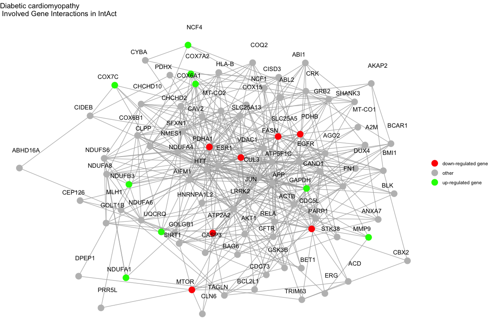
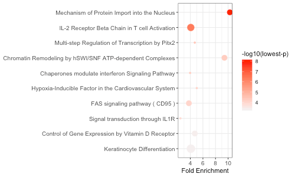

Step-by-Step Execution of the pathfindR Enrichment Workflow
Ege Ulgen
2023-05-10
Source:vignettes/manual_execution.Rmd
manual_execution.RmdThis vignette walks through each step of the pathfindR
active-subnetwork-oriented pathway enrichment analysis. For most
purposes, the wrapper function run_pathfindR() can be used
to perform this analysis from start to end. For users who wish to have
further control over the enrichment workflow, this vignette will be more
useful.

Load the package and prepare the input data frame
We first need to load the package and the input data to be used for
analysis. The input must be a data frame consisting of the following
columns: Gene Symbols, Change Values
(optional) and p values. The example data frame used in
this vignette (example_pathfindR_input) is the dataset
containing the differentially-expressed genes for the GEO dataset
GSE15573 comparing 18 rheumatoid arthritis (RA) patients versus 15
healthy subjects.
suppressPackageStartupMessages(library(pathfindR))
data(example_pathfindR_input)
head(example_pathfindR_input, 3)
#> Gene.symbol logFC adj.P.Val
#> 1 FAM110A -0.6939359 3.408699e-06
#> 2 RNASE2 1.3535040 1.008499e-05
#> 3 S100A8 1.5448338 3.466386e-05The protein-protein interaction network (PIN)
For the active subnetwork search process, we will need a protein-protein interaction network (PIN). pathfindR will map the input genes onto this PIN and identify active subnetworks which will then be used for enrichment analyses.
An active subnetwork can be defined as a group of interconnected genes in a protein-protein interaction network (PIN) that predominantly consists of significantly altered genes. In other words, active subnetworks define distinct disease-associated sets of interacting genes, whether discovered through the original analysis or discovered because of being in interaction with a significant gene.
The pin_name_path argument in all functions can be one
of “Biogrid”, “STRING”, “GeneMania”, “IntAct”, “KEGG”, “mmu_STRING” or
it can be the path to a custom PIN file provided by the user.
Process input data
We next need to process the input data for use in analysis via
input_processing():
example_processed <- input_processing(
input = example_pathfindR_input, # the input: in this case, differential expression results
p_val_threshold = 0.05, # p value threshold to filter significant genes
pin_name_path = "Biogrid", # the name of the PIN to use for active subnetwork search
convert2alias = TRUE # boolean indicating whether or not to convert missing symbols to alias symbols in the PIN
)After checking that the data frame complies with the requirements,
input_processing()filters the input so that genes with p values larger thanp_val_thresholdare excluded. Next, gene symbols that are not in the PIN are identified and excluded. For human genes, if aliases of these missing gene symbols are found in the PIN, these symbols are converted to the corresponding aliases (controlled by the argumentconvert2alias). This step is performed to best map the input data onto the PIN.
Obtain Gene Set Data
We obtain the necessary gene sets for enrichment analyses using
fetch_gene_set():
# using "BioCarta" as our gene sets for enrichment
biocarta_list <- fetch_gene_set(
gene_sets = "BioCarta",
min_gset_size = 10,
max_gset_size = 300
)
biocarta_gsets <- biocarta_list[[1]]
biocarta_descriptions <- biocarta_list[[2]]The available gene sets in pathfindR are “KEGG”, “Reactome”, “BioCarta”, “GO-All”, “GO-BP”, “GO-CC” and “GO-MF”. If the user prefers to use another gene set source, the
gene_setsargument should be set to"Custom"and the custom gene sets (list) and the custom gene set descriptions (named vector) should be supplied via the argumentscustom_genesandcustom_descriptions, respectively. See?fetch_gene_setfor more details.
Active Subnetwork Search and Enrichment Analyses
As outlined in the vignette Introduction to pathfindR,
run_pathfindR() initially identifies and filters active
subnetworks, then performs enrichment analyses on these subnetworks and
summarize the results.
To perform these steps manually, we utilize the function
active_snw_search() for identifying and filtering active
subnetworks and the function enrichment_analyses() for
obtaining enriched terms using these subnetworks. Because the active
subnetwork search algorithms are stochastic, we suggest iterating these
subnetwork identification and enrichment steps multiple times
(especially for “SA”)1:
n_iter <- 10 ## number of iterations
combined_res <- NULL ## to store the result of each iteration
for (i in 1:n_iter) {
###### Active Subnetwork Search
snws_file <- paste0("active_snws_", i) # Name of output file
active_snws <- active_snw_search(
input_for_search = example_processed,
pin_name_path = "Biogrid",
snws_file = snws_file,
score_quan_thr = 0.8, # you may tweak these arguments for optimal filtering of subnetworks
sig_gene_thr = 0.02, # you may tweak these arguments for optimal filtering of subnetworks
search_method = "GR", # we suggest using GR
seedForRandom = i # setting seed to ensure reproducibility per iteration
)
###### Enrichment Analyses
current_res <- enrichment_analyses(
snws = active_snws,
sig_genes_vec = example_processed$GENE,
pin_name_path = "Biogrid",
genes_by_term = biocarta_gsets,
term_descriptions = biocarta_descriptions,
adj_method = "bonferroni",
enrichment_threshold = 0.05,
list_active_snw_genes = TRUE
) # listing the non-input active snw genes in output
###### Combine results via `rbind`
combined_res <- rbind(combined_res, current_res)
}Summary of Enrichment Results
We next summarize the enrichment results (in
combined_res) using
summarize_enrichment_results() and annotate the involved
significant (input) genes in each term using
annotate_term_genes().
###### Summarize Combined Enrichment Results
summarized_df <- summarize_enrichment_results(combined_res,
list_active_snw_genes = TRUE
)
###### Annotate Affected Genes Involved in Each Enriched Term
final_res <- annotate_term_genes(
result_df = summarized_df,
input_processed = example_processed,
genes_by_term = biocarta_gsets
)Visualizations
We can visualize each enriched term diagram using
visualize_terms(). In this case, these will be graphs of
interactions of pathway-involved genes for each pathway. See
?visualize_terms for more details.
visualize_terms(
result_df = final_res,
hsa_KEGG = FALSE, # boolean to indicate whether human KEGG gene sets were used for enrichment analysis or not
pin_name_path = "Biogrid"
)
We can also create a graphical summary of the top 10 enrichment
results using enrichment_chart():
enrichment_chart(final_res[1:10, ])
The x-axis corresponds to fold enrichment values while the y-axis indicates the enriched terms. The size of each bubble indicates the number of significant genes in the given enriched term. Color indicates the -log10(lowest-p) value. The closer the color is to red, the more significant the enrichment is.
Here we are using a regular
forloop. In the wrapper functionrun_pathfindR(), however, a parallel loop (via the packageforeach) is used.↩︎